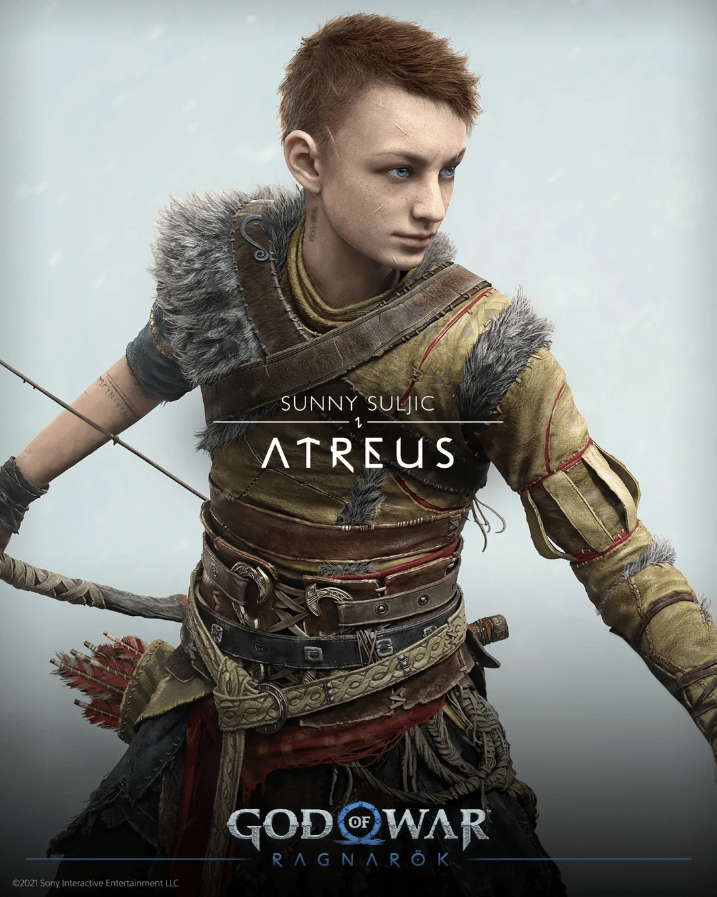

kratos
O Kratos Como muitos já sabem, Kratos é o protagonista da franquia God of War e repete o papel de personagem jogável.

Atreus
O Atreus Atreus é filho de Kratos e Faye, uma Gigante da raça Jotun, e está em busca de entender quem ele é e o que a linhagem da mãe significa para seu futuro.

Mimir
O Mimir Na mitologia nórdica, Mímir é o mais sábio dos deuses nórdicos. E segundo as lendas, aqueles que beberem deste poço obterão mais sabedoria. É um dos deuses gigantes antigos.